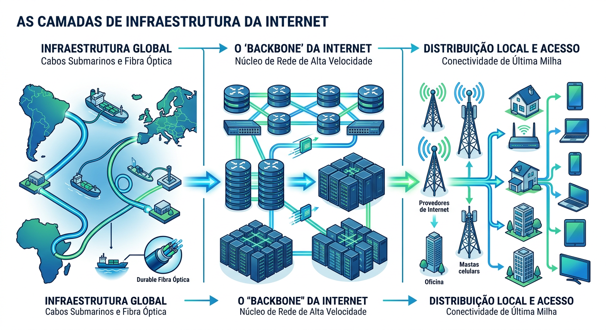

Da Guerra Fria à infraestrutura vital da sociedade global. Um ecossistema vivo em constante evolução.
Anos 1950: O lançamento do satélite Sputnik pela URSS gerou alerta máximo nos EUA. Era urgente criar sistemas de comunicação que sobrevivessem a ataques nucleares, substituindo redes centralizadas e vulneráveis.
A solução revolucionária para a resiliência militar.
Os dados são divididos em pequenos pacotes que viajam por rotas independentes. Se uma rota falha, os pacotes encontram caminhos alternativos até o destino.
Conexão de 4 universidades americanas (UCLA, Stanford, UC Santa Barbara, Utah).
O envio da palavra "LOGIN". Travou após "LO", mas provou o conceito.
A rede cresce, mas sofre do efeito "Torre de Babel": linguagens incompatíveis.
Criada no início dos anos 90 por Tim Berners-Lee no CERN. Trouxe HTML, HTTP, o primeiro navegador e a interface gráfica, democratizando o acesso e transformando a rede em um espaço multimídia.
Sobrevivência a ataques e compartilhamento de supercomputadores acadêmicos.
Visão utópica: conhecimento livre e disponível para todos sem censura.
A internet como epicentro da economia global (ex: Amazon, eBay).
Coleta de dados comportamentais para publicidade direcionada e IA.
A internet não tem um "presidente", depende de padrões técnicos seguidos por todos.
Grupo voluntário responsável por desenvolver e promover os protocolos técnicos básicos da internet, garantindo que a base técnica evolua de forma interoperável.
Fundado por Tim Berners-Lee, estabelece as normas técnicas para a Web, garantindo que os sites e aplicações funcionem uniformemente em qualquer navegador.
Gerencia os endereços IP e o sistema de nomes de domínio (DNS). Garante que digitar um endereço URL leve exatamente ao servidor correto em qualquer lugar do mundo.
O "corpo" da internet que transporta o tráfego de dados globalmente e localmente.

Algoritmos de busca que filtram e direcionam o que vemos na rede.
Redefinição das relações sociais e coleta massiva de dados comportamentais.
Influência direta em economias, eleições e comportamento social global.
Deixou de ser espectador passivo. Alimenta a rede com blogs, vídeos, postagens e avaliações.
Seus dados comportamentais são extraídos para alimentar algoritmos de IA corporativos.
De sites estáticos (56kbps) a plataformas de streaming 4K (Fibra).
Smartphones e redes 3G/4G/5G transformaram a rede em um ambiente habitado permanentemente.
Busca por descentralização (Blockchain) e conexão de bilhões de dispositivos.
Qual protocolo solucionou o problema da "Torre de Babel" e é considerado a "língua franca" da internet?
A internet não é um produto finalizado. Ela é moldada pelas tensões entre lucro, segurança e liberdade.
O futuro da rede depende de como nós — desenvolvedores, usuários e cidadãos — protegeremos os ideais de acesso universal contra mecanismos de controle e vigilância.